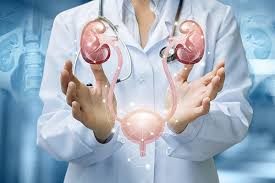

Neurology
The Neurology Department in a hospital focuses on
the diagnosis, treatment, and management of disorders affecting the nervous
system, including the brain, spinal cord, nerves, and muscles. These disorders can
range from headaches and seizures to stroke, Parkinson's disease, and multiple sclerosis.
Hospitals in Pune, such as Manipal Hospitals, Ruby Hall Clinic, and Jehangir Hospital,
offer comprehensive neurology services.
1.Headaches and Migraines: Diagnosis and management of various headache types.
2.Epilepsy: Diagnosis, treatment, and management of seizure disorders.
3.Stroke: Emergency care, treatment, and rehabilitation for stroke patients.
4.Parkinson's Disease: Diagnosis, treatment, and management of symptoms.
5.Multiple Sclerosis: Diagnosis, treatment, and management of this autoimmune disease.
6.Dementia: Including Alzheimer's disease and other forms of cognitive decline.
7.Neuromuscular disorders: Conditions affecting muscles and nerves.
8.Spinal cord disorders: Including injuries and diseases affecting the spinal cord.
9.Brain tumors: Diagnosis, treatment, and management, often in collaboration
with neurosurgeons.
Urology
Urology is a medical and surgical specialty focused on the
urinary and male reproductive systems. It encompasses a wide range of conditions
affecting organs like the kidneys, bladder, urethra, and prostate, as well as the male
reproductive organs. Urologists diagnose and treat diseases and disorders of these systems
in both men and women, from newborns to the elderly.
1.Urinary Issues: Symptoms like painful urination, frequent urination,
incontinence, or blood in the urine.
2.Male Reproductive Health: Concerns about erectile dysfunction,
infertility, or prostate problems.
3.Kidney Stones: Diagnosis and treatment of kidney stones.
4.Cancer: Management of cancers of the urinary and reproductive systems.
5.Referrals: People may be referred to a urologist by their primary care
physician or other specialists for specific urological concerns.

Gynecology
Gynecology is the branch of medicine that deals
with the health of the female reproductive system. It encompasses a
wide range of conditions, from menstruation and childbirth to infections
and cancers. A gynecologist is a doctor specializing in this field
Regular checkups (annually or as recommended)
Experiencing any symptoms related to the reproductive system
(e.g., pain, unusual discharge, bleeding)
Planning for pregnancy
Concerns about sexual health
1.Gynecologists also provide preventive care, such as Pap smears, cancer screenings, and vaccinations.
2.Gynecologists diagnose and treat various conditions, including menstrual problems, infections, pelvic pain,
infertility, and cancers of the reproductive organs.
3.Gynecology focuses on the health of the uterus, ovaries, fallopian tubes, cervix, and vagina.
Ear
The ear is a sensory organ responsible for both hearing and balance.
It's divided into three main parts: the outer ear, middle ear, and inner ear, each with
distinct functions in processing sound and maintaining equilibrium.
Outer Ear: This includes the auricle (the visible part of the ear) and the ear canal.
The auricle helps collect sound waves, which then travel through
the ear canal to the eardrum.
Middle Ear: The middle ear is an air-filled space containing the eardrum and three
tiny bones (ossicles): the malleus, incus, and stapes. The eardrum vibrates when
sound waves reach it, and these vibrations are
amplified by the ossicles and passed on to the inner ear.
Inner Ear: The inner ear contains the cochlea, a fluid-filled, snail-shaped
structure, and the semicircular canals, which are involved in balance. The cochlea
converts the mechanical vibrations into electrical signals that are sent to the
brain via the auditory nerve. The semicircular canals detect movement
and help with balance.
Urology
Urology is a medical and surgical specialty focused on the
urinary and male reproductive systems. It encompasses a wide range of conditions
affecting organs like the kidneys, bladder, urethra, and prostate, as well as the male
reproductive organs. Urologists diagnose and treat diseases and disorders of these systems
in both men and women, from newborns to the elderly.
1.Urinary Issues: Symptoms like painful urination, frequent urination,
incontinence, or blood in the urine.
2.Male Reproductive Health: Concerns about erectile dysfunction,
infertility, or prostate problems.
3.Kidney Stones: Diagnosis and treatment of kidney stones.
4.Cancer: Management of cancers of the urinary and reproductive systems.
5.Referrals: People may be referred to a urologist by their primary care
physician or other specialists for specific urological concerns.